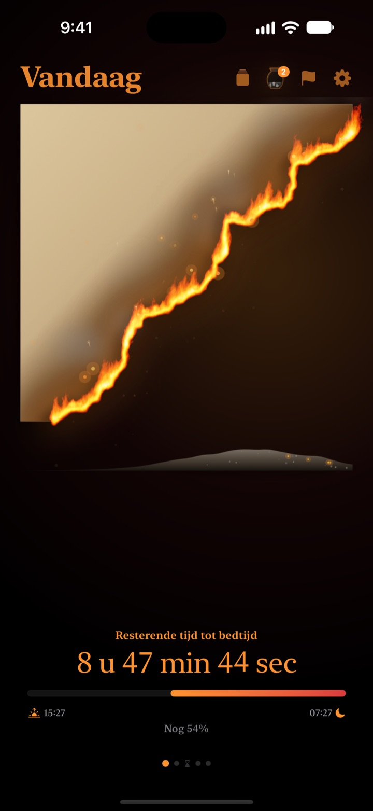
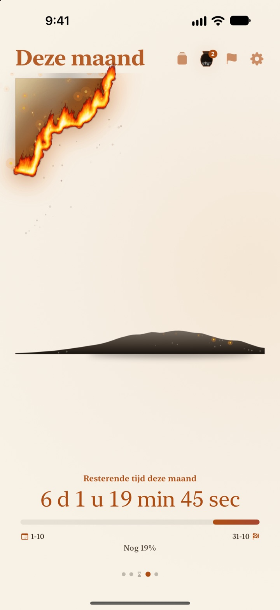
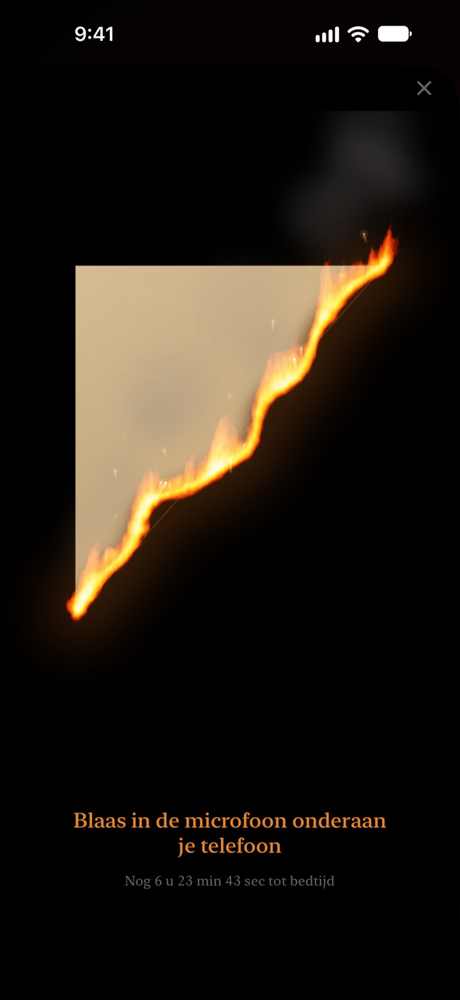
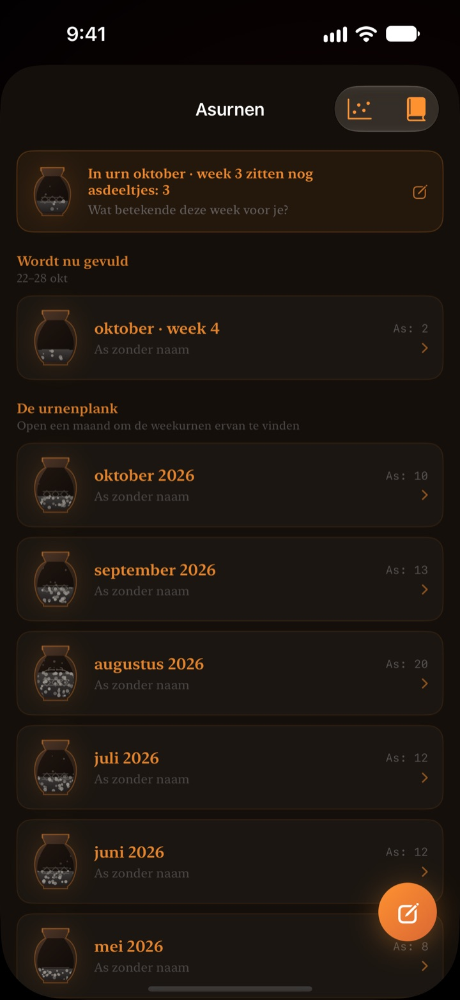

Wat er over is van vandaag,
brandt voor je ogen op
Een avond die als getal onschuldig lijkt, voelt heel anders als brandend perkament. Een halfuur voor bedtijd blaas je op het scherm, dooft het vuur en sluit je de dag af.
Het brandende perkament, het uitblazen en de reflecties zijn gratis.

Probeer het uit te blazen
Zet de klok op vlak voor bedtijd en houd dan de knop ingedrukt of blaas in de microfoon.
Is het ineens middernacht?
Je eet, gaat even zitten en de dag is voorbij. De cijfers op de klok zien er elke avond hetzelfde uit, dus je voelt niet dat de tijd opraakt. Brandend Perkament toont wat er over is als perkament dat opbrandt, zodat je het merkt voordat de avond verdwijnt.
Je dag, week en jaar branden op
Van wakker worden tot bedtijd brandt het perkament langzaam op. Zie op dezelfde manier wat er over is van deze week, deze maand en dit jaar.
Voeg een doel met een datum toe als deadline en het aftellen loopt mee.

Blaas de dag uit
Vanaf 30 minuten voor bedtijd blaas je op het brandende perkament om het vuur te doven. Alleen de kracht van je adem telt, er wordt niets opgenomen.
Het fragment dat overblijft, wordt bewaard. Draai het om en schrijf op de achterkant een regel over vandaag.

Verstreken tijd blijft over als as
Blik terug op de dag in één regel en zet die als stip in een grafiek met twee assen, naar hoe je de tijd besteedde. Reflecties stapelen zich op in asurnen per week en maand en zijn terug te lezen in het Reflectieboek.
De asstroom laat met een spreidingsgrafiek en een gloedkalender zien waar je tijd naartoe ging.

In drie stappen aan de slag
- 1
Stel opstaan en bedtijd in
Tik rechtsboven op het tandwiel. Het perkament gaat aan en uit volgens dat schema.
- 2
Kies een periode
Veeg tussen dag, week, maand en jaar, of verberg pagina's die je niet nodig hebt in Instellingen.
- 3
Voeg een widget toe
Op je beginscherm of toegangsscherm zie je de resterende tijd zonder de app te openen.
Waar je de resterende tijd ziet
- Dag
- Van wakker worden tot bedtijd
- Week · Maand · Jaar
- Wat er over is van deze week, maand en dit jaar
- Vrije tijd
- Het weekperkament brandt alleen tijdens de uren die je voor jezelf vrijhoudt (Pro)
- Deadlines
- Tijd tot de datum van een doel. Eén is gratis
- Beginschermwidgets
- Dagperkament in klein, middelgroot en groot. Week, maand, jaar en deadlines in klein en middelgroot
- Toegangsschermwidgets
- Rond, rechthoekig en op één regel
- Dynamic Island · Live Activity
- Vanaf een uur voor bedtijd of de hele dag. Kies of zet uit in Instellingen
Klap het Dynamic Island uit om het brandende perkament met het volledige aftellen te zien.
Het perkament is gratis. Pro bewaart meer.
Gratis
- Perkamenten voor dag, week, maand en jaar
- De vlam uitblazen en fragmenten verzamelen
- Reflecties van één regel, asurnen en Reflectieboek
- Ochtendcheck, desgewenst met slaapgegevens uit Gezondheid
- Widgets voor begin- en toegangsscherm, Dynamic Island
- Eén deadline
Brandend Perkament Pro
- Alleen je eigen vrije tijd laten branden
- Thema's: Maanlicht-hanji, Celadon, Schemering
- Vlammen: Prairiebrand, Kolen, Sterretje
- Fragmenten delen als kaarten en posters
- Reflectieboek exporteren als pdf
- Twaalf maanden asstroom
- Onbeperkt deadlines
Geen abonnement. Eén keer kopen en voor altijd van jou, inclusief alle Pro-functies die nog komen.
Nieuw apparaat? Tik in Instellingen op Aankopen herstellen.
Veelgestelde vragen
De widget toont een andere tijd dan de app.
iOS tekent beginschermwidgets niet elke seconde opnieuw. Zodra je de app opent, lopen ze weer gelijk. Aftellen per seconde zie je in het Dynamic Island en de Live Activity op het toegangsscherm.
Ik blaas, maar het vuur gaat niet uit.
Uitblazen kan pas vanaf 30 minuten voor bedtijd. Controleer of toegang tot de microfoon is toegestaan en blaas ongeveer een seconde gelijkmatig dicht bij de microfoon onderaan de iPhone. Een kort geluid is niet genoeg.
Wordt mijn stem opgenomen?
Nee. Alleen de kracht van het blazen wordt gemeten. Er wordt geen geluid opgenomen of bewaard.
Wat zie ik terwijl ik slaap?
Na bedtijd verschijnt een brandend hart dat laat zien hoe ver de nacht is tot je wakker wordt. 's Ochtends vraagt de app of je op tijd naar bed ging; was je laat, dan begint het perkament van vandaag zoveel geschroeid. Gekoppeld aan Gezondheid gebruikt de app je geregistreerde inslaaptijd zonder te vragen.
Wanneer komen meldingen?
Een uur voor bedtijd. Komen ze niet, controleer dan Instellingen > Berichtgeving > Brandend Perkament.
Kost het veel batterij?
Het aftellen in de app verspringt elke seconde, maar widgets worden zuinig door iOS bijgewerkt, dus de invloed is klein.
Waar worden mijn gegevens bewaard?
Opstaan en bedtijd, deadlines, reflecties en urnen blijven op je apparaat. De ontwikkelaar ontvangt alleen anonieme gebruiksstatistieken, crashdiagnoses en feedback die je zelf stuurt. Geen advertenties, geen tracking.
Is Pro een abonnement?
Nee. Je betaalt één keer en houdt het voor altijd. Tik op een nieuw apparaat in Instellingen op Aankopen herstellen.
Bugs, ideeën of andere vragen? Mail naar leeo@kakao.com.